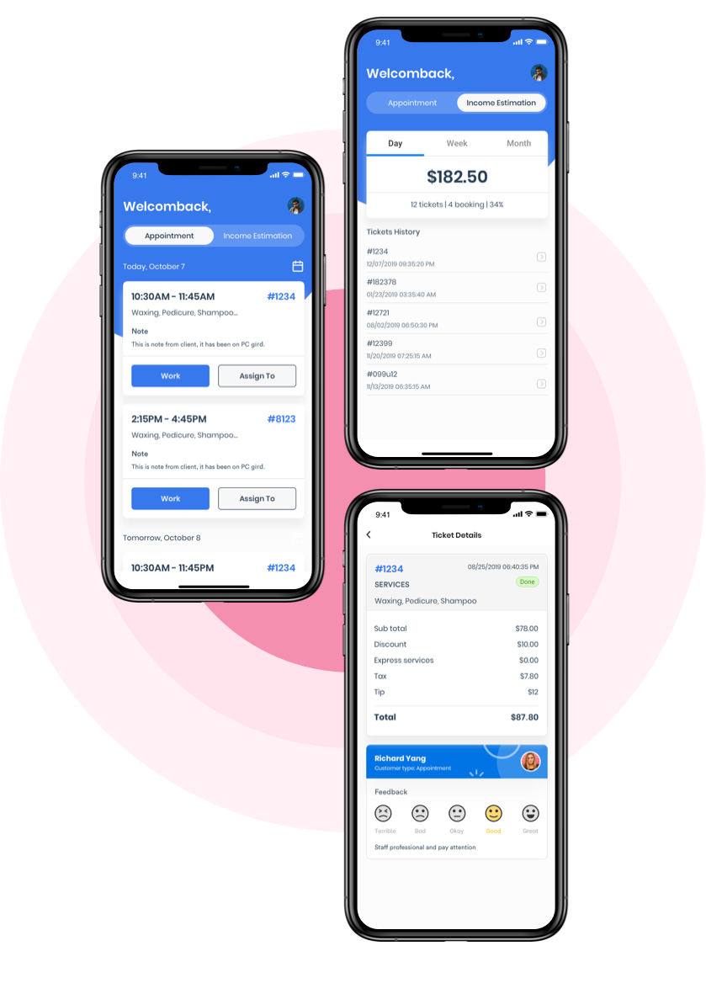
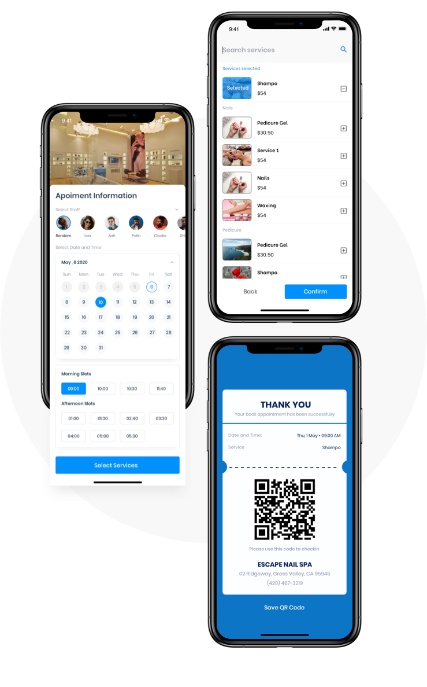
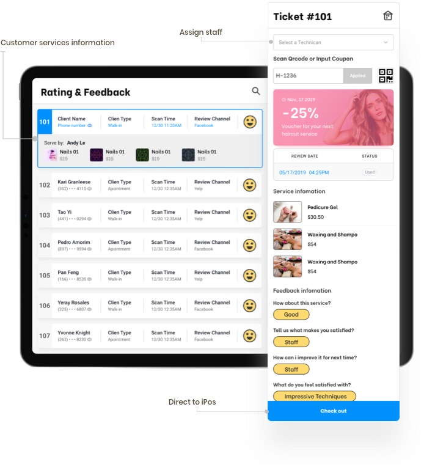
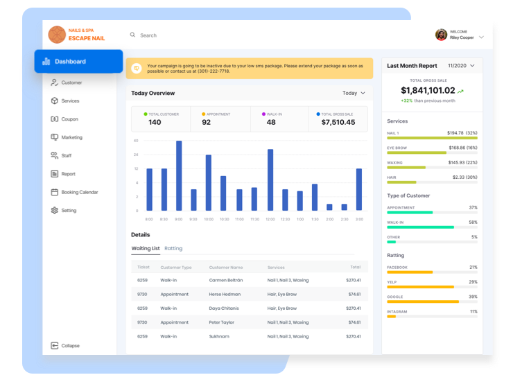

Overview
The problem
iSystem wanted 20% of a 54,000-salon market (published) but had 50 salons on the platform (client-reported) — and was asking one design team to build eight apps at once, across three user types with opposed needs.
The eight apps, as briefed
I sequenced the eight apps around a single transaction spine — book, then check in, then pay — and pushed the owner-facing remarketing suite, which was the client's stated priority, behind it. The team stopped building eight products in parallel and started building one. The sequence was accepted and specced; the company folded before the later phases shipped, so no launch metric is mine to claim.
Why a Vietnamese team was building US salon software
There are around 54,000 nail salons in the United States and more than 250,000 licensed technicians, on a nail-care market worth about USD 3.58bn (published). Roughly half of those salons are Vietnamese-owned — over 80% of them in California (published). That is the single most useful fact about this engagement and the original case study never mentioned it: the buyer and the builder shared a language and a community, in a category incumbent salon software had historically served in English only.
So the market was real, and the reason a Vietnam-based team had a route into it was real. What was not real was the plan. A stated ambition of 20% against 50 paying salons is not a strategy, it is a slogan — and at 0.09% penetration the binding constraint was never feature coverage. It was whether the first fifty salons could run a whole working day on the system without falling back to paper.

Ninety-five percent of the users, half the product
The client arrived with its expectations already written down: consistent, friendly, attractive. Those are three adjectives, and taking them at face value framed the first weeks as a visual-consistency problem across eight apps. The numbers underneath told a different story.
What discovery found

Three users, opposed interests
The customer wants to book in under a minute and leave. The technician wants an accurate queue and a correct tip split. The owner wants data — and every feature serving that appetite adds a step for whoever is holding the tablet.
The volume sat on the wrong side
7,730 customers, 350 staff, 50 owners (client-reported). The build plan gave four of eight apps to the owners and their staff — so 95% of the user base was scheduled to receive half the surface.
Check-in is where it bites
The owner wants identity and marketing consent at the door. The walk-in wants a number and a chair. Every conflict in the product shows up on that one screen first.
The four questions, answered in writing
- Who are the users, and what problem do they have? Salon owners running a business on a paper appointment book, a card terminal and a separate loyalty punch card, with no view of which customers come back.
- Why now? Fifty paying salons and a 20% ambition. Sequencing was urgent precisely because the gap was 220× — there was no version of "build all eight" that reached general availability before runway ran out.
- What would tell us it worked? A salon completes a full day — walk-ins, appointments, payments, tips — without paper. (Target. Never measured; see §06.)
- Is it feasible? For the transaction spine, yes. For eight apps at the team size we had, no — which is the finding that produced the decision below.
One product with three front doors
Eight apps for three segments, one design team, and a client whose stated priority was the part of the system with the fewest users and the least data to work with. The question was not which app to design well. It was which order makes the others possible.
Options
Owner-first. Ship CRM, analytics and the remarketing suite first. The owner signs the cheque and it is what the client asked for. Cost: the owner dashboard has nothing to report until transactions exist. It would have shipped an empty product.
Customer-first. Ship the four consumer apps. Buys adoption and app-store presence. Cost: no salon can actually operate on it — bookings arrive with nowhere to land.
Transaction spine first. iBooking → iCheckin → iPOS as one continuous flow across all three user types, then loyalty, then owner tooling built on the data the spine produces.
Criteria
Does a salon get through a whole working day on it? Does it generate the data the later apps depend on? And can we validate it with the fifty salons we already had, rather than the fifty thousand we did not?
What I chose
C, the spine. It is the only sequence where each phase makes the next one possible: check-in has no meaning without a booking, the POS has nothing to total without a check-in, and every owner-facing report is a query over transactions that do not exist until the first three ship. I stopped treating this as eight products sharing a logo and started treating it as one product with three front doors.
What I killed
The remarketing suite — the client's stated priority — along with the lucky-spin referral mechanic and gift cards. All of it went behind the spine. My argument was that a retention tool is worthless with no transaction history to retain against, and that spending the first build cycle on acquisition mechanics for fifty salons optimises the wrong end of the funnel.
Which left three apps holding up the other five.
One record, three views
The spine is a single flow crossing three surfaces. The customer books in four steps and confirms by OTP; that booking lands on the staff waiting list at check-in; the check-in record totals into iPOS at payment. The customer sees a confirmation, the technician sees a queue position, the owner sees a line of revenue — one record, three views of it.
Customer — 7,730 users (client-reported)
Four apps, and the two that matter are the first two links of the spine. iBooking takes an appointment in four steps and closes with OTP verification — an extra step on the flow with the highest drop-off risk, kept deliberately. Without a verified phone number a no-show is uncontactable and the loyalty layer has no identity to attach to. I traded conversion for a customer record the later apps could be built on.
The four customer apps

Staff — 350 users (client-reported)
The middle of the spine, and the surface a technician is actually holding during a shift. A customer checking in appears on the staff waiting list; that same record totals in iPOS at payment, including the tip split. iStaff carries schedule, income and history around it.
One shared design system
Each app alone would have been better with a bespoke pattern set. Shared components meant a technician moving between iCheckin and iPOS mid-shift never relearned anything — and one designer could hold eight surfaces at once. That trade is the only reason the scope was survivable at all.
The staff surfaces

Salon owner — 50 users (client-reported)
Designed, specced, and sequenced last on purpose. CRM pulls the business into one endpoint and the owner can read the day's metrics from anywhere — but every figure on it is a query over transactions that only exist once the spine is running. Building it first would have shipped an empty dashboard to the fifty people most likely to cancel.
Owner surfaces

Interactive prototypes were built and shared for every major flow above. They were hosted on InVision, which shut down its prototyping product at the end of 2024 and deleted them — so the screens are what survives, and I would rather say that than leave seven buttons on this page that go nowhere.
The company folded
The transaction spine was specced, prototyped and handed off in December 2021. The later phases were never built, and iSystem no longer exists. I set one target in discovery — a salon completing a full working day without paper — and I never got to measure it. No number on this page is a launch outcome and I am not going to imply otherwise.
What I would have tracked, in order: the share of daily transactions originating in the app rather than on paper; walk-in check-in completion rate; and the ratio of repeat to first-time customers at sixty days, which is the only metric that would have justified building the remarketing suite I deferred.
It is worth being clear about what this case study is, given that. It is not a product that won. It is a prioritisation call, made under a scope that was never going to fit, on a product whose company ran out of road. The call still looks right to me — but I never got the evidence, and a decision without an outcome is an argument, not a result.